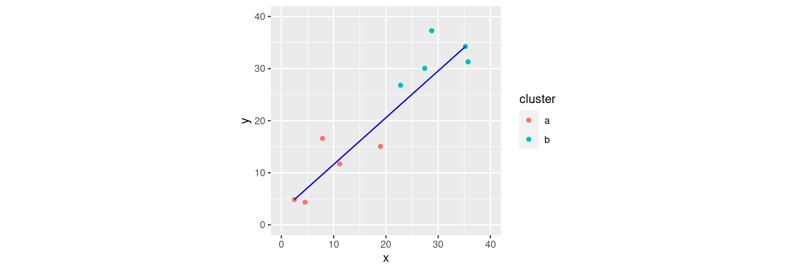
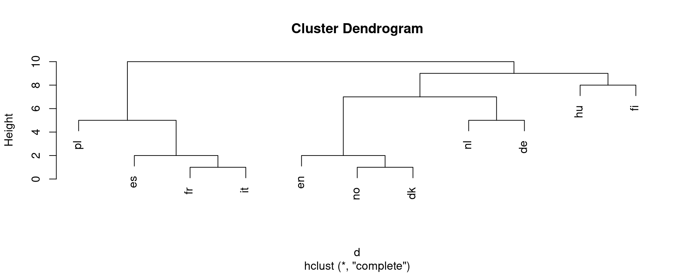
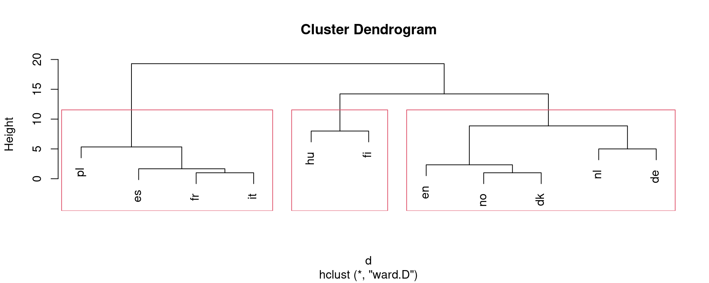
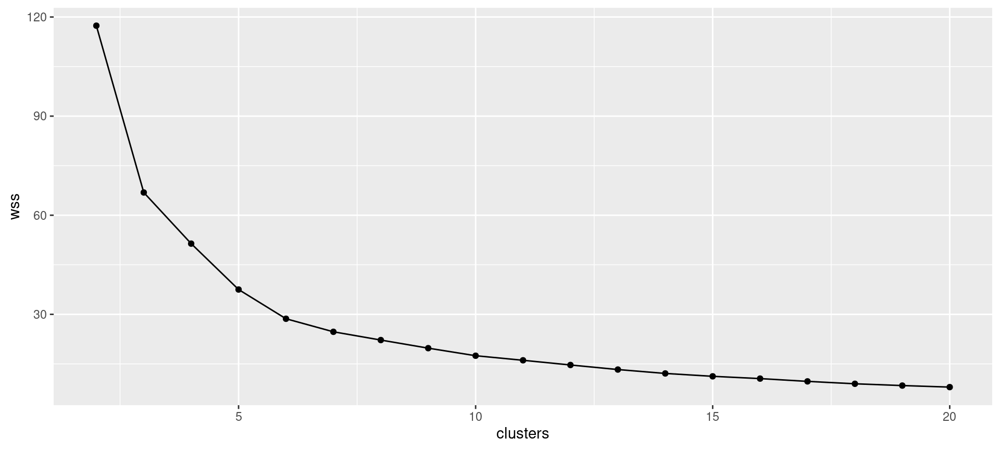
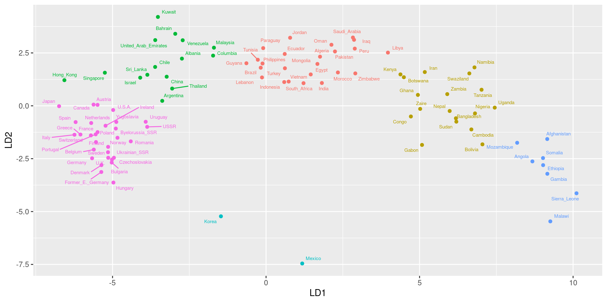

Cluster analysis
Cluster Analysis
One side-effect of discriminant analysis: could draw picture of data (if 1st 2s
LDs told most of story) and see which individuals “close” to each other.Discriminant analysis requires knowledge of groups.
Without knowledge of groups, use cluster analysis: see which individuals close together, which groups suggested by data.
Idea: see how individuals group into “clusters” of nearby individuals.
Base on “dissimilarities” between individuals.
Or base on standard deviations and correlations between variables (assesses dissimilarity behind scenes).
Packages
One to ten in 11 languages
| English | Norwegian | Danish | Dutch | German | |
|---|---|---|---|---|---|
| 1 | one | en | en | een | eins |
| 2 | two | to | to | twee | zwei |
| 3 | three | tre | tre | drie | drei |
| 4 | four | fire | fire | vier | vier |
| 5 | five | fem | fem | vijf | funf |
| 6 | six | seks | seks | zes | sechs |
| 7 | seven | sju | syv | zeven | sieben |
| 8 | eight | atte | otte | acht | acht |
| 9 | nine | ni | ni | negen | neun |
| 10 | ten | ti | ti | tien | zehn |
One to ten
| French | Spanish | Italian | Polish | Hungarian | Finnish | |
|---|---|---|---|---|---|---|
| 1 | un | uno | uno | jeden | egy | yksi |
| 2 | deux | dos | due | dwa | ketto | kaksi |
| 3 | trois | tres | tre | trzy | harom | kolme |
| 4 | quatre | cuatro | quattro | cztery | negy | nelja |
| 5 | cinq | cinco | cinque | piec | ot | viisi |
| 6 | six | seis | sei | szesc | hat | kuusi |
| 7 | sept | siete | sette | siedem | het | seitseman |
| 8 | huit | ocho | otto | osiem | nyolc | kahdeksan |
| 9 | neuf | nueve | nove | dziewiec | kilenc | yhdeksan |
| 10 | dix | diez | dieci | dziesiec | tiz | kymmenen |
Dissimilarities and languages example
Can define dissimilarities how you like (whatever makes sense in application).
Sometimes defining “similarity” makes more sense; can turn this into dissimilarity by subtracting from some maximum.
Example: numbers 1–10 in various European languages. Define similarity between two languages by counting how often the same number has a name starting with the same letter (and dissimilarity by how often number has names starting with different letter).
Crude (doesn’t even look at most of the words), but see how effective.
Two kinds of cluster analysis
Looking at process of forming clusters (of similar languages): hierarchical cluster analysis (
hclust).Start with each individual in cluster by itself.
Join “closest” clusters one by one until all individuals in one cluster.
How to define closeness of two clusters? Not obvious, investigate in a moment.
Know how many clusters: which division into that many clusters is “best” for individuals? K-means clustering (
kmeans).
Two made-up clusters

How to measure distance between set of red points and set of blue ones?
Single-linkage distance
Find the red point and the blue point that are closest together:
Single-linkage distance between 2 clusters is distance between their closest points.
Complete linkage
Find the red and blue points that are farthest apart:
Complete-linkage distance is distance between farthest points.
Ward’s method
Work out mean of each cluster and join point to its mean:

Work out (i) sum of squared distances of points from means.
Ward’s method part 2
Now imagine combining the two clusters and working out overall mean. Join each point to this mean:

Calc sum of squared distances (ii) of points to combined mean.
Ward’s method part 3
Sum of squares (ii) will be bigger than (i) (points closer to own cluster mean than combined mean).
Ward’s distance is (ii) minus (i).
Think of as “cost” of combining clusters:
if clusters close together, (ii) only a little larger than (i)
if clusters far apart, (ii) a lot larger than (i) (as in example).
Hierarchical clustering revisited
Single linkage, complete linkage, Ward are ways of measuring closeness of clusters.
Use them, starting with each observation in own cluster, to repeatedly combine two closest clusters until all points in one cluster.
They will give different answers (clustering stories).
Single linkage tends to make “stringy” clusters because clusters can be very different apart from two closest points.
Complete linkage insists on whole clusters being similar.
Ward tends to form many small clusters first.
Dissimilarity data in R
Dissimilarities for language data were how many number names had different first letter:
Making a distance object
Cluster analysis and dendrogram

Clustering process
Comments
Lines of
mergeshow what was combinedFirst, languages 2 and 3 (
noanddk)Then languages 6 and 8 (
frandit)Then #7 combined with cluster formed at step 2 (
esjoined tofrandit).Then
enjoined tonoanddkFinally
fijoined to all others.
Complete linkage
Ward

Chopping the tree
- Three clusters (from Ward) looks good:
Turning the “named vector” into a data frame
Drawing those clusters on the tree
Comparing single-linkage and Ward
In Ward, Dutch and German get joined earlier (before joining to Germanic cluster).
Also Hungarian and Finnish get combined earlier.
Making those dissimilarities
Original data:
It would be a lot easier to extract the first letter if the number names were all in one column.
Tidy, and extract first letter
Calculating dissimilarity
Suppose we wanted dissimilarity between English and Norwegian. It’s the number of first letters that are different.
First get the lines for English:
And then the lines for Norwegian
And now we want to put them side by side, matched by number. This is what left_join does. (A “join” is a lookup of values in one table using another.)
The join
first.x is 1st letter of English word, first.y 1st letter of Norwegian word.
Counting the different ones
or
english %>% left_join(norwegian, join_by(number)) %>%
count(different=(first.x != first.y)) %>%
filter(different) %>% pull(n) -> ans
ans[1] 2Words for 1 and 8 start with different letter; rest are same.
A language with itself
The answer should be zero:
english %>% left_join(english, join_by(number)) %>%
count(different=(first.x != first.y)) %>%
filter(different) %>% pull(n) -> ans
ansinteger(0)- but this is “an integer vector of length zero”.
- so we have to allow for this possibility when we write a function to do it.
Function to do this for any two languages
countdiff <- function(lang.1, lang.2, d) {
d %>% filter(language == lang.1) -> lang1d
d %>% filter(language == lang.2) -> lang2d
lang1d %>%
left_join(lang2d, join_by(number)) %>%
count(different = (first.x != first.y)) %>%
filter(different) %>% pull(n) -> ans
# if ans has length zero, set answer to (integer) zero.
ifelse(length(ans)==0, 0L, ans)
}Testing
English and Norwegian have two different; English and English have none different.
Check.
For all pairs of languages?
- First need all the languages:
- and then all pairs of languages:
The pairs
Run countdiff for all those language pairs
Make square table of these
and that was where we began.
Another example
Birth, death and infant mortality rates for 97 countries (variables not dissimilarities):
24.7 5.7 30.8 Albania 12.5 11.9 14.4 Bulgaria
13.4 11.7 11.3 Czechoslovakia 12 12.4 7.6 Former_E._Germany
11.6 13.4 14.8 Hungary 14.3 10.2 16 Poland
13.6 10.7 26.9 Romania 14 9 20.2 Yugoslavia
17.7 10 23 USSR 15.2 9.5 13.1 Byelorussia_SSR
13.4 11.6 13 Ukrainian_SSR 20.7 8.4 25.7 Argentina
46.6 18 111 Bolivia 28.6 7.9 63 Brazil
23.4 5.8 17.1 Chile 27.4 6.1 40 Columbia
32.9 7.4 63 Ecuador 28.3 7.3 56 Guyana
...Want to find groups of similar countries (and how many groups, which countries in each group).
Tree would be unwieldy with 97 countries.
More automatic way of finding given number of clusters?
Reading in
Standardizing
Infant mortality rate numbers bigger than others, consequence of measurement scale (arbitrary).
Standardize (numerical) columns of data frame to have mean 0, SD 1, done by
scale.
Three clusters
Pretend we know 3 clusters is good. Take off the column of countries, and run kmeans on the resulting data frame, asking for 3 clusters:
[1] "cluster" "centers" "totss"
[4] "withinss" "tot.withinss" "betweenss"
[7] "size" "iter" "ifault" A lot of output, so look at these individually.
What’s in the output?
- Cluster sizes:
- Cluster centres:
birth death infant
1 -1.0376994 -0.3289046 -0.90669032
2 1.1780071 1.3323130 1.32732200
3 0.3768062 -0.6297388 0.09639258- Cluster 2 has lower than average rates on everything; cluster 3 has much higher than average.
Cluster sums of squares and membership
Cluster 1 compact relative to others (countries in cluster 1 more similar).
[1] 3 1 1 1 1 1 2 1 3 3 1 2 1 1 1 1 1 1 1 1 1 2 2 1 3 3 3 2
[29] 1 3 1 3 3 1 1 3 3 3 2 2 3 3 2 2 3 2 2 2 3 1 1 1 1 1 1 3
[57] 3 3 3 3 1 1 1 1 1 1 1 1 1 1 3 3 3 3 3 1 2 1 3 3 2 3 1 3
[85] 2 2 2 2 3 2 2 2 2 2 3 2 2The cluster membership for each of the 97 countries.
Store countries and clusters to which they belong
Next, which countries in which cluster?
Write function to extract them:
Cluster membership: cluster 2
[1] "Bolivia" "Mexico" "Afghanistan"
[4] "Iran" "Bangladesh" "Gabon"
[7] "Ghana" "Namibia" "Sierra_Leone"
[10] "Swaziland" "Uganda" "Zaire"
[13] "Cambodia" "Nepal" "Angola"
[16] "Congo" "Ethiopia" "Gambia"
[19] "Malawi" "Mozambique" "Nigeria"
[22] "Somalia" "Sudan" "Tanzania"
[25] "Zambia" Cluster 3
[1] "Albania" "Ecuador" "Paraguay"
[4] "Kuwait" "Oman" "Turkey"
[7] "India" "Mongolia" "Pakistan"
[10] "Algeria" "Botswana" "Egypt"
[13] "Libya" "Morocco" "South_Africa"
[16] "Zimbabwe" "Brazil" "Columbia"
[19] "Guyana" "Peru" "Venezuela"
[22] "Bahrain" "Iraq" "Jordan"
[25] "Lebanon" "Saudi_Arabia" "Indonesia"
[28] "Malaysia" "Philippines" "Vietnam"
[31] "Kenya" "Tunisia" Cluster 1
[1] "Czechoslovakia" "Hungary"
[3] "Romania" "USSR"
[5] "Ukrainian_SSR" "Chile"
[7] "Uruguay" "Finland"
[9] "France" "Greece"
[11] "Italy" "Norway"
[13] "Spain" "Switzerland"
[15] "Austria" "Canada"
[17] "Israel" "China"
[19] "Korea" "Singapore"
[21] "Thailand" "Bulgaria"
[23] "Former_E._Germany" "Poland"
[25] "Yugoslavia" "Byelorussia_SSR"
[27] "Argentina" "Belgium"
[29] "Denmark" "Germany"
[31] "Ireland" "Netherlands"
[33] "Portugal" "Sweden"
[35] "U.K." "Japan"
[37] "U.S.A." "United_Arab_Emirates"
[39] "Hong_Kong" "Sri_Lanka" Problem!
kmeansuses randomization. So result of one run might be different from another run.Example: just run again on 3 clusters,
tableof results:
vital.s %>%
select(-country) %>% kmeans(3) -> vital.km3a
table(
first = vital.km3$cluster,
second = vital.km3a$cluster
) second
first 1 2 3
1 40 0 0
2 0 24 1
3 4 0 28- Clusters are similar but not same.
Solution to this
nstartoption onkmeansruns that many times, takes best. Should be same every time:
How many clusters?
Three was just a guess.
Idea: try a whole bunch of #clusters (say 2–20), obtain measure of goodness of fit for each, make plot.
Appropriate measure is
tot.withinss.Run
kmeansfor each #clusters, gettot.withinsseach time.
Function to get tot.withinss
for an input number of clusters, taking only numeric columns of input data frame:
Note: writing function to be as general as possible, so that we can re-use it later.
Constructing within-cluster SS
Make a data frame with desired numbers of clusters, and fill it with the total within-group sums of squares. ss expects a single number of clusters, not a vector of several, so run rowwise:
Scree plot
Interpreting scree plot
Lower
wssbetter.But lower for larger #clusters, harder to explain.
Compromise: low-ish
wssand low-ish #clusters.Look for “elbow” in plot.
Idea: this is where
wssdecreases fast then slow.On our plot, small elbow at 6 clusters. Try this many clusters.
Six clusters, using nstart
[1] 24 18 15 2 8 30 birth death infant
1 0.4160993 -0.5169988 0.2648754
2 1.2092406 0.7441347 1.0278003
3 -0.4357690 -1.1438599 -0.7281108
4 -0.2199722 2.1116577 -0.4544435
5 1.3043848 2.1896567 1.9470306
6 -1.1737104 -0.1856375 -0.9534370Make a data frame of countries and clusters
Cluster 1
Below-average death rate, though other rates a little higher than average:
[1] "Ecuador" "Paraguay" "Oman"
[4] "Turkey" "India" "Mongolia"
[7] "Pakistan" "Algeria" "Egypt"
[10] "Libya" "Morocco" "South_Africa"
[13] "Zimbabwe" "Brazil" "Guyana"
[16] "Peru" "Iraq" "Jordan"
[19] "Lebanon" "Saudi_Arabia" "Indonesia"
[22] "Philippines" "Vietnam" "Tunisia" Cluster 2
High on everything:
Cluster 3
Low on everything:
Cluster 4
Very high death rate, just below average on all else:
Cluster 5
Very high on everything:
Cluster 6
A bit below average on everything:
[1] "Czechoslovakia" "Hungary"
[3] "Romania" "USSR"
[5] "Ukrainian_SSR" "Uruguay"
[7] "Finland" "France"
[9] "Greece" "Italy"
[11] "Norway" "Spain"
[13] "Switzerland" "Austria"
[15] "Canada" "Bulgaria"
[17] "Former_E._Germany" "Poland"
[19] "Yugoslavia" "Byelorussia_SSR"
[21] "Belgium" "Denmark"
[23] "Germany" "Ireland"
[25] "Netherlands" "Portugal"
[27] "Sweden" "U.K."
[29] "Japan" "U.S.A." Comparing our 3 and 6-cluster solutions
six
three 1 2 3 4 5 6
1 0 0 9 1 0 30
2 0 16 0 1 8 0
3 24 2 6 0 0 0Compared to 3-cluster solution:
most of (old) cluster 1 gone to (new) cluster 6
cluster 2 split into clusters 2 and 5 (two types of “poor” countries)
cluster 3 split into clusters 1 and 3 (two types of “intermediate” countries, divided by death rate).
Getting a picture from kmeans
- Use discriminant analysis on clusters found, treating them as “known” groups.
Discriminant analysis
So what makes the groups different?
Uses package
MASS(loaded):
[1] 21.687195 8.851811 1.773006 LD1 LD2 LD3
birth 2.6879695 1.1224202 -1.9483853
death 0.6652712 -2.7213044 -0.6049358
infant 2.1111801 0.7650912 2.3542296LD1 is some of everything (high=poor, low=rich).
LD2 mainly death rate, high or low.
A data frame to make plot from
- Get predictions first:
What’s in there; making a plot
dcontains country names, cluster memberships and discriminant scores.- Plot
LD1againstLD2, colouring points by cluster and labelling by country:
The plot
It would be better to zoom in on parts of this plot.
Final example: a hockey league
An Ontario hockey league has teams in 21 cities. How can we arrange those teams into 4 geographical divisions?
Distance data in spreadsheet.
Take out spaces in team names.
Save as “text/csv”.
Distances, so back to
hclust.
A map

Attempt 1
Plot, with 4 clusters

Comments
Can’t have divisions of 1 team!
“Southern” divisions way too big!
Try splitting into more. I found 7 to be good:
Seven clusters

Divisions now
I want to put Huntsville and North Bay together with northern teams.
I’ll put the Eastern teams together. Gives:
North: Sault Ste Marie, Sudbury, Huntsville, North Bay
East: Brockville, Cornwall, Ottawa, Peterborough, Belleville, Kingston
West: Windsor, London, Sarnia
Central: Owen Sound, Barrie, Toronto, Niagara Falls, St Catharines, Brantford, Hamilton, Kitchener
Getting them same size beyond us!
Another map

Comments
Tree shows how languages combined into clusters.
First (bottom), Spanish, French, Italian joined into one cluster, Norwegian and Danish into another.
Later, English joined to Norse languages, Polish to Romance group.
Then German, Dutch make a Germanic group.
Finally, Hungarian and Finnish joined to each other and everything else.